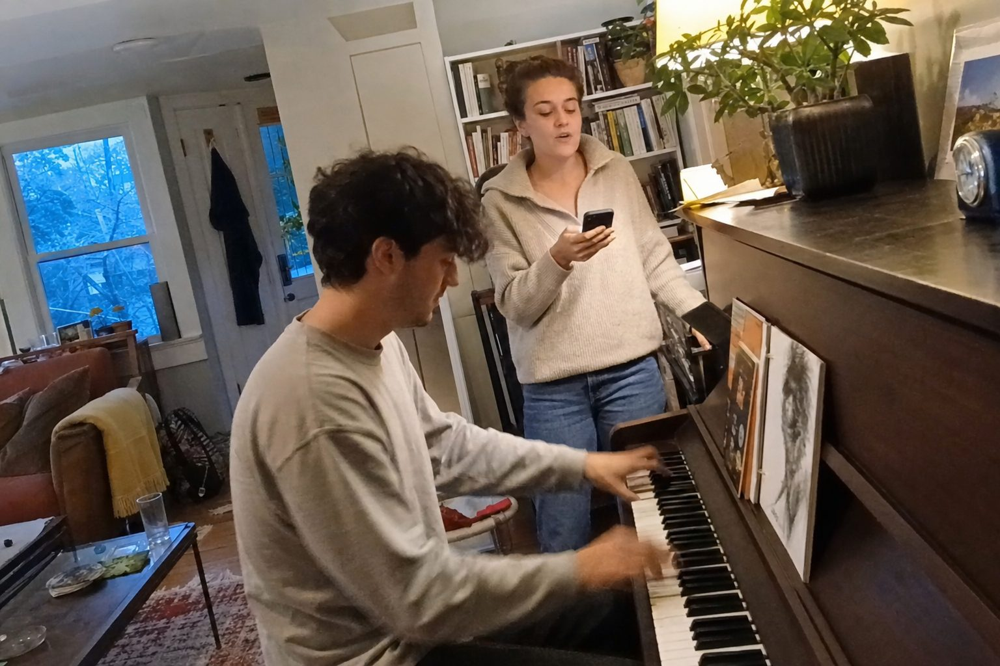
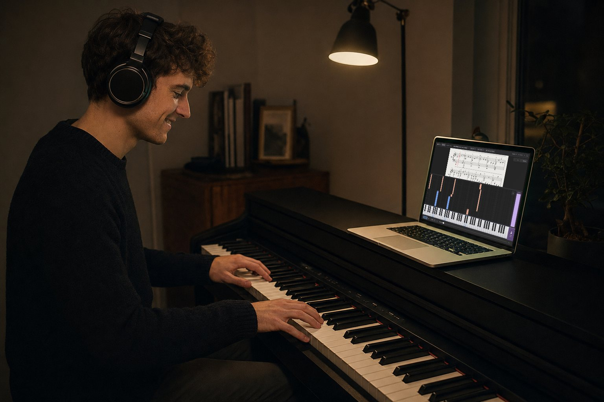

Set it on the piano.
Fold the music rest back and set your laptop on top. The score and the falling notes stay in front of you while you play.
Free and open source · Public beta
Follow the notes. Play the right keys. rach3 waits until you’re ready to move on.
__PLATFORM_LINE__
Still in beta, so expect rough edges — tell us what you find.

HOW IT WORKS
For people with a digital piano at home.

Fold the music rest back and set your laptop on top. The score and the falling notes stay in front of you while you play.
Turn on Bluetooth MIDI on your piano and choose it in the app.
rach3 sees every key and the pedal as you press them.
PRACTICE
It doesn’t run on like a video. The lesson moves only when you press the next notes, and stops while you hold a wrong key.
Both move together. Follow whichever is easier for you.
The lesson waits until every note of the chord is down and any extra key is up.
Keep long notes down for as long as they last, then let go and play the next ones.


THE SCREEN
Can’t read music yet? Follow the falling notes. Can read it? Use both.
In lessons with separate hands. Practice one hand first, then both together.
Lower the tempo, listen to the lesson before you play it, and turn on Repeat to start again at the end.
Close the app and open it again: the lesson, the position and your settings are as you left them.
CREATING LESSONS
Give rach3 a MIDI file, a PDF score, a video or a YouTube link.
From YouTube

In rach3

Lessons you make stay in your library.
Uses the notes, timing and pedal already in the file.
Reads a PDF score and turns its notes into a lesson.
Makes a lesson from the piano in a video on your computer.
Paste a link and the piano in the video becomes a lesson.
Audio transcription and PDF recognition are experimental. Generated lessons can contain note or rhythm errors. Local-file processing runs on your Mac; YouTube requires an internet connection.
FREE
Download it, open it, start playing.

WHAT YOU NEED
Nothing else to install. The tools for making lessons from videos and PDFs download the first time you use them.
__MAC_TEXT__
rach3 reads your keys and pedal over Bluetooth MIDI. A piano that only plays audio over Bluetooth isn’t enough.
Lessons and settings stay after every update, and downloaded tools aren’t downloaded again.

OPEN SOURCE
rach3 is licensed under the GNU AGPL v3. Report a bug, suggest an idea or build it yourself. No ads.
rach3 is in beta on Mac and Windows. Features still change. Lessons made from recordings or PDFs can have wrong notes or rhythms, and Bluetooth on Windows hasn’t been tried with many pianos yet. Updates install themselves.
Turning a recording or a PDF into notes is done by these openly shared models. Thank you to the people behind them.
Nazif Can Tamer, Victoria Ebert, Guang Yang and Noah A. Smith. Rubato: Transcribing Piano Music with Timestamps, NeurIPS 2026.
Vocal model by Kimberley Jensen, on the architecture by Ju-Chiang Wang, Wei-Tsung Lu and Minz Won. Run with python-audio-separator by Nomad Karaoke.
Christian Liebhardt, building on oemer and Polyphonic-TrOMR. Text recognition by RapidOCR with PaddleOCR models.
Engraving by the RISM Digital Center; score analysis by Michael Scott Asato Cuthbert and the music21 contributors. Music fonts Leipzig and Bravura.
__RELEASE_LABEL__